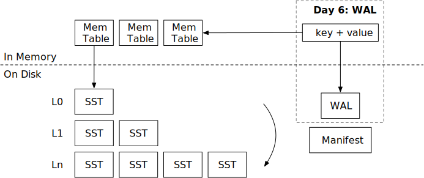

预写日志 (WAL)

在本章中，您将：
- 实现预写日志文件的编码和解码。
- 在系统重启时从 WAL 中恢复内存表。
要将测试用例复制到启动代码并运行它们，请执行以下命令：
cargo x copy-test --week 2 --day 6
cargo x scheck
任务 1：WAL 编码
在这个任务中，您需要修改：
src/wal.rs
在前一章中，我们已经实现了清单文件，使得 LSM 状态可以持久化。并且我们实现了 close 函数，在停止引擎之前将所有内存表刷新到 SST 中。现在，如果系统崩溃（即断电）怎么办？我们可以将内存表修改记录到 WAL（预写日志）中，并在重启数据库时恢复 WAL。只有当 self.options.enable_wal = true 时，WAL 才会启用。
WAL 编码只是一个键值对列表。
| key_len | key | value_len | value |
您还需要实现 recover 函数，从 WAL 读取并恢复内存表的状态。
请注意，我们使用 BufWriter 进行 WAL 写入。使用 BufWriter 可以减少进入操作系统的系统调用次数，从而减少写路径的延迟。当用户修改键时，数据不保证写入磁盘。相反，引擎仅保证在调用 sync 时数据是持久的。为了正确地将数据持久化到磁盘，您需要首先通过调用 flush() 将数据从缓冲写入器刷新到文件对象，然后使用 get_mut().sync_all() 对文件进行 fsync。请注意，您仅需要在引擎的 sync 被调用时进行 fsync。您不需要在每次写入数据时进行 fsync。
任务 2：集成 WAL
在这个任务中，您需要修改：
src/mem_table.rs
src/wal.rs
src/lsm_storage.rs
MemTable 有一个 WAL 字段。如果 wal 字段设置为 Some(wal)，您需要在更新内存表时追加到 WAL。在您的 LSM 引擎中，如果 enable_wal = true，您需要创建 WAL。您还需要在创建新内存表时使用 ManifestRecord::NewMemtable 记录更新清单。
您可以使用 create_with_wal 函数创建带有 WAL 的内存表。WAL 应写入存储目录中的 .wal。内存表 ID 应与作为 L0 SST 刷新的内存表的 SST ID 相同。
任务 3：从 WAL 恢复
在这个任务中，您需要修改：
src/lsm_storage.rs
如果启用了 WAL，您需要在加载数据库时基于 WAL 恢复内存表。您还需要实现数据库的 sync 函数。sync 的基本保证是引擎确定数据已持久化到磁盘（并且在重启时可以恢复）。为了实现这一点，您可以简单地同步当前内存表对应的 WAL。
cargo run --bin mini-lsm-cli -- --enable-wal
请记住从状态中恢复正确的 next_sst_id，它应为 max{memtable id, sst id} + 1。在您的 close 函数中，如果 enable_wal 设置为 true，则不应将内存表刷新到 SST，因为 WAL 本身提供持久性。您应该等到所有压缩和刷新线程退出后再关闭数据库。
测试您的理解
- 您应该在何时在引擎中调用
fsync？如果您在每次 put 键请求时调用fsync会发生什么？ - 在 SSD（固态驱动器）上，
fsync操作通常有多昂贵？ - 您何时可以告诉用户他们的修改（put/delete）已持久化？
- 您如何处理 WAL 中的损坏数据？
我们不提供这些问题的参考答案，欢迎在 Discord 社区中讨论。
我们非常欢迎您的反馈。欢迎加入我们的Discord社区。发现问题？请在github.com/skyzh/mini-lsm上创建问题/拉取请求。版权所有 © 2022 - 2024 Alex Chi Z. 保留所有权利。